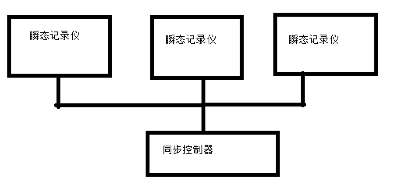
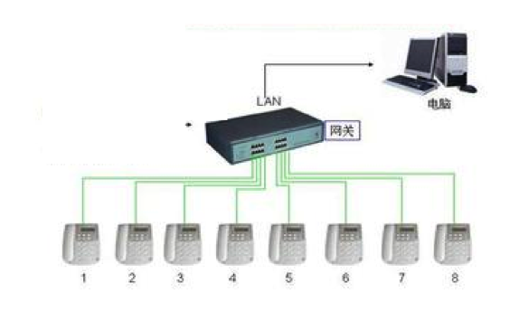
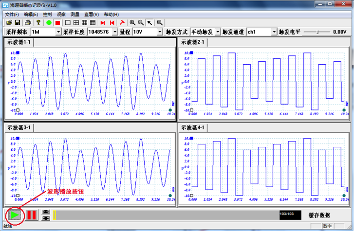

200, xiaolinwei Street (NanJing)
200, xiaolinwei Street (NanJing)
特点
种类
解决方案
中低采样率--连续采样速度最高至1MS/s
本仪器接受定制，多种相同或不同型号的指标可以组合增加通道或删减，可以减少到1个通道，也可以增加到1000个通道以上。
| 型号 | 通道数（可调） | 最大采样率（Hz) | 电压最大量程 | 分辨率 | 接头类型 | 工作温度 | 机箱类型 |
|---|---|---|---|---|---|---|---|
| DS0-100 | 256 | 100K | ±10V | 14bit | BNC | -10-45℃ | 便携、台式、xU |
| DS0-200 | 256 | 200K | ±10V | 14bit | BNC | -10-45℃ | 便携、台式、xU |
| DS0-500 | 256 | 500K | ±10V | 14bit | BNC | -10-45℃ | 便携、台式、xU |
| DS0-1000 | 256 | 1M | ±10V | 14bit | BNC | -10-45℃ | 便携、台式、xU |
高采样率触发采样，采样速度可达100MS/s
本仪器接受定制，多种相同或不同型号的指标可以组合增加通道或删减，可以减少到1个通道，也可以增加到1000个通道以上。
| 型号 | 通道数（可调） | 采样率（Hz) | 电压最大量程 | 分辨率 | 接头类型 | 工作温度 | 机箱类型 |
|---|---|---|---|---|---|---|---|
| DS1-5 | 64 | 5M | ±5V | 14bit | BNC | -10-45℃ | 便携、台式、xU |
| DS1-10 | 64 | 10M | ±5V | 14bit | BNC | -10-45℃ | 便携、台式、xU |
| DS1-20 | 64 | 20M | ±5V | 14bit | BNC | -10-45℃ | 便携、台式、xU |
| DS1-50 | 64 | 50M | ±5V | 14bit | BNC | -10-45℃ | 便携、台式、xU |
| DS1-100 | 64 | 100M | ±2.5V | 14bit | BNC | -10-45℃ | 便携、台式、xU |
选用同步控制器SYNC，可以让多台仪器同步工作，以增加总的通道数，多台仪器同步使用，仪器之间需要同步配置选项。
用多台仪器通过网络建立多通道的分布式系统，这样可以突破单台仪器硬盘数据流量的限制，网线传输可达数千米。
网络方案有三种不同模式:
1:1模式：一台测试系统连接一台用户终端
x:1模式：多台测试系统连接到一台用户终端
1:x模式：一台测试系统连接多台用户终端
以上三种模式几乎可以满足任何使用需求。从简单的远距离通道扩展到相隔数百公里的分布式测量系统,均可方便实现。
本瞬态记录仪应用软件为海道普瞬态记录仪软件，简单易用，即使是初次使用示波器的人员，也能很快上手。在不同操作系统下安装瞬态记录仪的方法一致，在本公司提供的光盘中含有安装程序SETUP.exe，用户双击此应用程序按界面提示进行安装。
1）为中航XXX单位研制了64通道、100M/CH采样率的瞬态记录仪，在国内外处于领先。